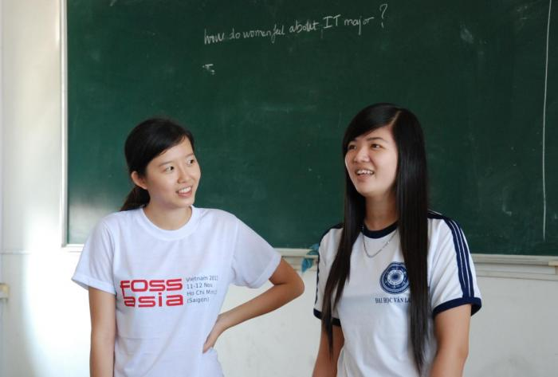
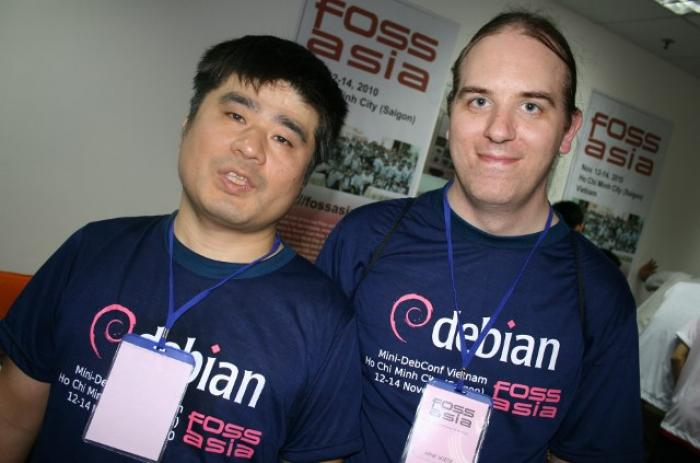

我們經常會遇到這樣的問題：我怎樣才能加入這個社群呢？事實上，在科技圈內，要加入開放技術或開放原始碼的社群，大多沒有複雜或正式的會員資格，對於FOSSASIA社群來說，你只需要開始在 GitHub的上關注FOSSASIA，並開始對您有興趣的專案做貢獻 ，這就是成為FOSSASIA會員的唯一條件。因此，讓我們一起為聯繫每一個人而開發吧！
FOSSASIA團隊歡迎所有對FOSSASIA開源軟體有興趣的貢獻者或支持者加入FOSSASIA，在軟體開發，文案編寫、套件維護、測試相關、用戶支持者、部落客、舉辦活動或聚會的社群管理者.....等人們，FOSSASIA誠心歡迎各位的加入。
社群中IT領域的女性們互相討論
這裡有一些可以建議大家如何一同參與的小訣竅
下載、安裝並使用FOSSASIA夥伴們開發的開源應用程式
加入FOSSASIA專案的第一步就是下載FOSSASIA的小夥伴們貢獻的專案並試著使用它。最好的動機是這個專案對您有幫助，而您自己也一起貢獻了這個專案。來github.com/fossasia 看看FOSSASIA小夥伴們一同貢獻的專案，或是也可以看看FOSSASIA的夥伴開發的開源社交媒體搜尋引擎：github.com/loklak.
在FOSSASIA上對有興趣的專案加上星星 ★ star 吧
為了激勵目前 FOSSASIA在GitHub上貢獻的小夥伴，若對於有興趣的專案，請別吝嗇的發揮您的善意，請幫這個專案按下星星，並產生一個備份（fork）。 這些舉手之勞，是給貢獻者們一點點的鼓勵，也是對貢獻者們繼續貢獻的最好的動力。

學習如何實踐Learn about best practices
為了幫助新加入的開發者們開始一同參與貢獻，我們已經撰寫：最佳實踐：在開放原始碼上貢獻。請抽空詳細的閱讀。了解我們的「最佳實踐：在開放原始碼上貢獻」的內容，將幫助您參與社群的協作，也能確保您的程式碼能更快的被合併。
訂閱 FOSSASIA 最新消息
在FOSSASIA主頁面中訂閱「FOSSASIA 最新消息」，讓您最快掌握FOSSASIA最新的軟體發布、活動、及程式編寫等訊息。.
閱讀FOSSASIA的部落格，並成為Mailing List的支持成員
在Open Tech articles on FOSSASIA blog中，學習由許多專案開發者、貢獻者、志工、及公司的工作人員....等支持FOSSASIA網絡的人們的經驗與心得。在FOSSASIA Mailing List註冊訂閱，並定期瀏覽FOSSASIA的部落格：blog.fossasia.org.
Follow us on Social Media
Show us you interest in FOSSASIA’s Open Technology and keep up to date on new developments by following us on Twitter and retweeting important updates: twitter.com/fossasia
And, become a member on social networks like Google+ and Facebook and connect with other contributors:
* Facebook www.facebook.com/fossasia/
* Google+ plus.google.com/108920596016838318216

Join and support the FOSSASIA network at community events
Set up a booth or a table about FOSSASIA at Open Source community events! There are many events of the open source community all over the world. The core team of FOSSASIA is simply not able to attend all events. You can support the cause by making the project visible. Register as a member of the FOSSASIA community at events, set up an info point and showcase Free and Open Source projects. Check out for example FOSSASIA event calendar calendar.fossasia.org or our meetup group in Singapore: meetup.com/FOSSASIA-Singapore-Open-Technology-Meetup
Translate our projects and their documentation
Do you speak more than one language? Most Open Tech projects are 100% volunteer translated, which means you can be part of a translation team translating software and documentation thousands of people will use. Start now and check out our GitHub repository.
Mini Debconf Participants in Saigon